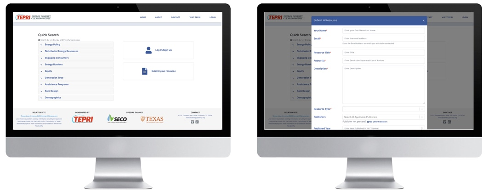
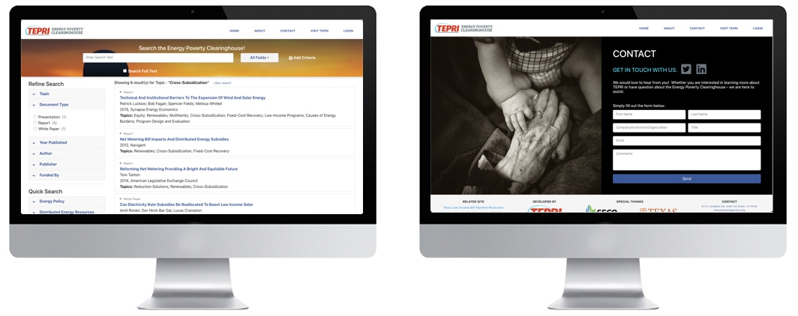

Energy Poverty Clearinghouse
GRA for Energy Institute, The University of Texas at Austin
Technologies Used: React, PHP, Laravel, MySQL, HTML5, Bootstrap, Mailchimp, Sketch
Project Deliverables: Live Website
The objective of the Energy-Poverty Clearinghouse project is to create a comprehensive and user-friendly portal of information on publications, websites, and other resources that are specific to the topics of energy and poverty in Texas and the nation. The portal can be used as a library or repository of information. TEPRI wants its portal to be a seminal “go-to” site to inform stakeholders and the general public on all the trending issues, technologies and services related to low-income energy burdens in America
Deliverables
- Database with 1,000-1,500 resources available at launch with descriptive records of each and a plan for growth
- Public access to the clearing house would be restricted to searching and viewing results (title, date, creator).
- User authentication - there should be a credential for user with two categories (admin and registered user).
- Search bar to search within resources and records content fields
- Filters option to refine the results using a list of specific record fields
- High interactivity with social media/share button
- Submission form for registered users to submit publications for Clearinghouse for admin to review/approve
- Optimize website with SEO and Google data analytics for reporting/tracking usage

